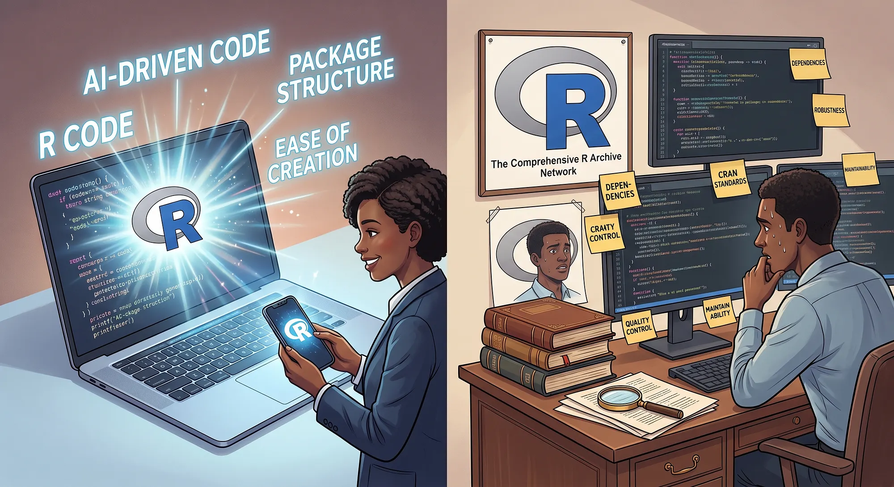
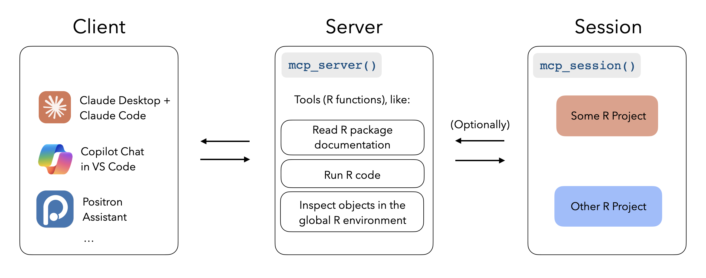
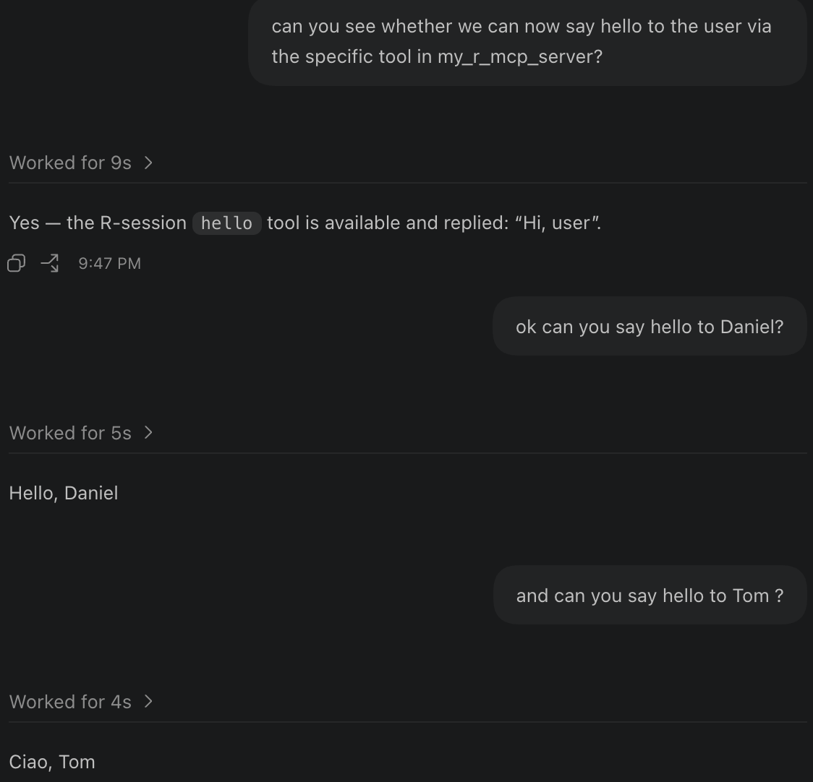
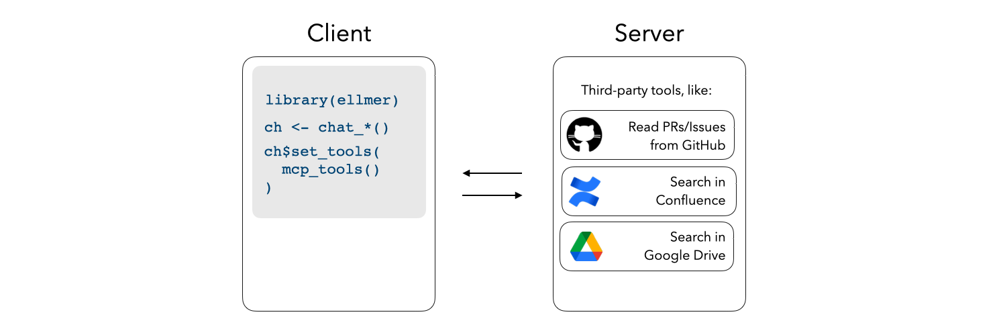

openstatsware Workshop: Good Software Engineering Practice for R Packages
October 8, 2026

More generated code makes design, documentation, and review even more valuable.
| Disappointment in 2024 | Productive use in 2026 |
|---|---|
| Bad at translating code (e.g. R to Julia) | Translates code well between e.g. SAS and R |
| Bad at mathematics, e.g. inverse functions | Can solve difficult math problems |
| Bad at writing tests | Draft tests, run them, and investigate failures |
| Bad at slide generation | Create and revise slides with visual feedback |
| Made up literature references | Can reliably find literature references |
Design → Plan → Implement in steps → Check → Review
Hadley Wickham’s Tidy design principles provide useful reading for designing APIs that humans and assistants can understand.
| IDE | Useful AI integration |
|---|---|
| VS Code | GitHub Copilot for inline/tab completion and chat; extensions for Claude Code and Codex |
| Positron | Posit’s AI integration, Posit Assistant, with context from your R session, objects, plots, and console history |
AGENTS.md gives compatible coding agents shared project context. Put it at the repository root; use scoped instructions where needed.
Keep instructions short, accurate, and version controlled. Check how your assistant discovers them.
Example:
# Working on this R package
- Read DESCRIPTION, the design vignette, and CONTRIBUTING.md first.
- Keep public function signatures and defaults stable unless requested.
- Edit roxygen source; regenerate Rd and NAMESPACE with devtools::document().
- Add tests for changed behavior; run devtools::test() and devtools::check().
- Update vignettes and NEWS.md for user-visible changes.
- Explain mathematical changes and benchmark performance claims.
- Report the changed files, check results, and unresolved questions.SKILL.md packages instructions for a particular kind of taskSkills supply reusable guidance; project documentation supplies the facts about your package.
Example from our mmrm work: use the mathematical description to identify a faster algorithm, then implement it in code.
From https://tidydesign.substack.com/p/y-code-when-ai by Hadley Wickham
Use a fresh review pass; fix the findings and rerun affected checks. AI review can be very helpful for larger diffs (but ideally you want small diffs).
Model Context Protocol (MCP) is an open protocol that gives AI applications a standard way to connect with external systems.

From https://posit-dev.github.io/mcptools/
Useful packages:
First, you define the tools in a script file, together with the MCP server start up call. This file can go inside your package in the inst folder.
Example tools.R file:
For example in Codex you then define the MCP server, e.g. in the ~/.codex/config.toml file:
[mcp_servers.my_r_mcp_server]
enabled = true
command = "Rscript"
args = ["-e", 'source(system.file("tools.R", package = "zurich2026"))']So this is telling Codex how to start up R and in there just source the tools.R file from the zurich2026 package.

Screenshot from the Codex session showing the MCP server in action
This autoslider.core MCP server defines R functions, registers them as MCP tools, then starts the server. Scroll through the source below.
#!/usr/bin/env Rscript
# Autoslider MCP Server
#
# Exposes the autoslider.core pipeline as MCP tools so any MCP-compatible
# client (Claude Desktop, Claude Code, Cursor, Open WebUI, etc.) can
# orchestrate slide generation conversationally.
#
# Usage:
# Rscript inst/mcp/autoslider_mcp_server.R
#
# Register in your MCP client — see inst/mcp/claude_desktop_config_snippet.json
#
# Requirements:
# install.packages("mcptools") # on CRAN
# # ellmer and autoslider.core already in your renv/library
suppressPackageStartupMessages({
library(mcptools)
library(ellmer)
library(autoslider.core)
library(filters)
library(dplyr)
})
# ---- session state ----------------------------------------------------------
# Holds spec and outputs across tool calls within one Claude session.
.state <- new.env(parent = emptyenv())
.state$spec <- NULL
.state$outputs <- NULL
# ---- helpers ----------------------------------------------------------------
stop_if <- function(cond, msg) if (cond) stop(msg, call. = FALSE)
require_spec <- function() stop_if(is.null(.state$spec), "No spec loaded. Call load_spec first.")
require_outputs <- function() stop_if(is.null(.state$outputs), "No outputs generated. Call run_pipeline first.")
# ---- tool functions ---------------------------------------------------------
fn_list_programs <- function() {
spec_file <- system.file("spec.yml", package = "autoslider.core")
spec <- read_spec(spec_file)
programs <- sort(unique(vapply(spec, `[[`, character(1), "program")))
paste(programs, collapse = "\n")
}
fn_load_spec <- function(spec_path, filters_path, program_filter, suffix_filter) {
if (spec_path == "default") {
spec_path <- system.file("spec.yml", package = "autoslider.core")
}
if (filters_path == "default") {
filters_path <- system.file("filters.yml", package = "autoslider.core")
}
filters::load_filters(yaml_file = filters_path, overwrite = TRUE)
spec <- read_spec(spec_path)
if (nzchar(program_filter)) {
progs <- trimws(strsplit(program_filter, ",")[[1]])
spec <- filter_spec(spec, program %in% progs, verbose = FALSE)
}
if (nzchar(suffix_filter)) {
suffs <- trimws(strsplit(suffix_filter, ",")[[1]])
spec <- filter_spec(spec, suffix %in% suffs, verbose = FALSE)
}
.state$spec <- spec
.state$outputs <- NULL
sprintf(
"Spec loaded: %d output(s).\n%s",
length(spec),
paste(names(spec), collapse = "\n")
)
}
"Must call load_spec first.",
"Pass dataset_paths as comma-separated name=path pairs, e.g.",
'"adsl=/data/adsl.rds,adae=/data/adae.rds".',
'Use "example" to use the built-in example CDISC datasets.'
),
arguments = list(
dataset_paths = type_string(
'Comma-separated name=path.rds pairs, or "example" for built-in data.'
)
)
),
tool(
fun = fn_add_ai_notes,
name = "add_ai_notes",
description = paste(
"Generate AI speaker notes for each slide output using any supported LLM.",
"Reads prompts from prompt.yml and calls the chosen provider.",
"Must call run_pipeline first.",
"Supported providers: anthropic, ollama, openai, deepseek."
),
arguments = list(
provider = type_string(
'LLM provider: "anthropic", "ollama", "openai", or "deepseek".'
),
model = type_string(
'Model name for the provider, e.g. "claude-haiku-4-5", "llama3.2", "gpt-4o-mini", "deepseek-chat".'
),
api_key = type_string(
paste(
'API key. Leave empty ("") to read from the provider\'s env var',
"(ANTHROPIC_API_KEY, OPENAI_API_KEY, DEEPSEEK_API_KEY). Not required for ollama."
)
),
prompt_path = type_string(
'Path to prompt.yml. Use "default" for the built-in package prompts.'
),
base_url = type_string(
paste(
'Optional custom base URL. Useful for local Ollama ("http://localhost:11434")',
'or self-hosted endpoints. Leave empty ("") for provider defaults.'
)
)
)
),
tool(
fun = fn_add_ai_story,
name = "add_ai_story",
description = paste(
"Post-process a generated deck: read the .pptx, ask an LLM to tell the story",
"of the tables, and insert REAL content slides (title + bullets) -- a summary",
"section at the front and a conclusions section at the end. Unlike add_ai_notes",
"(which hides text in speaker notes), these slides show in presentation mode.",
"Must call run_pipeline and generate_slides first.",
"Supported providers: anthropic, ollama, openai, deepseek."
),
arguments = list(
provider = type_string(
'LLM provider: "anthropic", "ollama", "openai", or "deepseek".'
),
model = type_string(
'Model name for the provider, e.g. "claude-haiku-4-5", "llama3.2", "gpt-4o-mini", "deepseek-chat".'
),
api_key = type_string(
paste(
'API key. Leave empty ("") to read from the provider\'s env var',
"(ANTHROPIC_API_KEY, OPENAI_API_KEY, DEEPSEEK_API_KEY). Not required for ollama."
)
),
base_url = type_string(
paste(
'Optional custom base URL. Useful for local Ollama ("http://localhost:11434")',
'or self-hosted endpoints. Leave empty ("") for provider defaults.'
)
),
infile = type_string(
"Path to the generated .pptx to read (the deck produced by generate_slides)."
),
outfile = type_string(
'Path to write the augmented deck to. Leave empty ("") to overwrite infile in place.'
),
max_slides = type_string(
"Maximum slides per section (summary and conclusions). Empty string defaults to 4."
)
)
),
tool(
fun = fn_generate_slides,
name = "generate_slides",
description = paste(
"Assemble the generated outputs into a PowerPoint (.pptx) file.",
"Must call run_pipeline first.",
"Returns the absolute path to the written file."
),
arguments = list(
outfile = type_string(
'Output file path for the .pptx, e.g. "/tmp/study_slides.pptx".'
),
template = type_string(
'Path to a .pptx template file. Use "default" for the built-in basic.pptx theme.'
)
)
),
tool(
fun = fn_reset,
name = "reset",
description = "Clear the session state (loaded spec and generated outputs). Useful to start a fresh run.",
arguments = list()
)
)
# ---- start server -----------------------------------------------------------
mcp_server(tools = tools)Vice versa, it is also possible to use R as an MCP client to interact with other MCP servers, e.g. from GitHub, Confluence or Google Drive, using mcptools:

From https://posit-dev.github.io/mcptools/
This needs a corresponding configuration of the MCP servers in ~/.config/mcptools/config.json. Different MCP servers need dedicated configuration entries there.
AGENTS.md with conventions and check commandsDiscuss: What helped? What did you need to correct? What evidence made you trust the result?
Chapter author: Daniel Sabanés Bové, Zurich 2026
Graphic: Pierre DeBois, DataDrivenInvestor, 23 September 2026. Supplied for this course; third-party content excluded from the course’s CC BY-SA license. No additional reuse license is asserted.
Technical sources are linked on the relevant slides; further reading: Tidy design principles
Unless separately credited, this work is licensed under CC BY-SA 4.0.
Zurich 2026 sources adapt Zurich 2024 and Munich 2026, following Seoul 2026. Author credits are retained above.
Zurich adaptations by Daniel Sabanés Bové: course details, program, workflow, roxygen2 tags, SSH setup, optimization and AI chapters. Full attribution and exceptions.
Reuse requires creator attribution, source and license links, and an indication of changes.